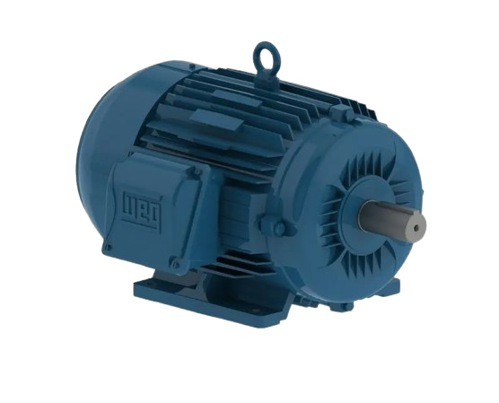

Motor elétrico de indução trifásico
O que é um Motor Trifásico de Indução?
O motor é a máquina elétrica mais utilizada no setor industrial. Sua função principal é transformar energia elétrica alternada (alimentada por três fases: R, S e T) em energia mecânica de rotação.
Diferente de outros motores, o rotor (a parte que gira) não necessita de nenhuma ligação elétrica direta vinda de fora; seu movimento é gerado totalmente por indução eletromagnética.
Como Ele Funciona?
O funcionamento é dividido em etapas simples e bem alinhadas: ✦Campo Magnético Girante (CMG): As três fases elétricas (defasadas em 120° entre si) passam pelas bobinas fixas do estator. Isso cria um campo magnético que "gira" ao redor do motor a uma velocidade síncrona. ✦Indução no Rotor: Ao girar, esse campo magnético corta os condutores do rotor (a parte interna móvel, frequentemente do tipo "gaiola de esquilo"), induzindo nele uma tensão e uma corrente elétrica. ✦Surgimento da Força: Essa corrente induzida cria seu próprio campo magnético no rotor. A interação entre o campo do estator e o campo do rotor faz o eixo girar, tentando "perseguir" o campo magnético do estator.
Por que ele é chamado de Assíncrono? (O Escorregamento)
O rotor nunca consegue alcançar exatamente a mesma velocidade do campo magnético girante do estator. Se alcançasse, deixaria de cortar as linhas de campo e a indução pararia. Essa pequena diferença de velocidade é chamada de escorregamento, e é por isso que o motor de indução é classificado como assíncrono.
Estrutura Principal
✦Estator (parte fixa): Núcleo metálico laminado com ranhuras onde ficam alojadas as bobinas elétricas trifásicas. ✦Rotor (parte móvel): Eixo que transmite o movimento mecânico. O tipo mais comum é o gaiola de esquilo (barras de alumínio/cobre curto-circuitadas nas extremidades), mas também existe o tipo bobinado. ✦Mancais e Rolamentos: Suportam o eixo e reduzem o atrito no giro. ✦Ventilador e Aletas de Refrigeração: Uma hélice acoplada ao eixo sopra o ar pelas aletas externas da carcaça, resfriando o motor continuamente. ✦Caixa de Ligação: Onde estão os terminais para realizar o fechamento elétrico (como Estrela ou Triângulo).
Principais Vantagens e Aplicações
O motor trifásico é preferido no mercado (especialmente para potências a partir de 2 CV) devido a: ✦Alta Eficiência e Torque: Mantém um torque de giro elevado e constante. ✦Baixa Manutenção: Construtivamente simples e sem escovas elétricas para desgastar. ✦Robustez: Suporta ambientes industriais severos.
Onde é aplicado: É o coração da indústria, alimentando bombas d'água, compressores de ar, esteiras transportadoras, exaustores, pontes rolantes, moinhos e máquinas ferramentas.
